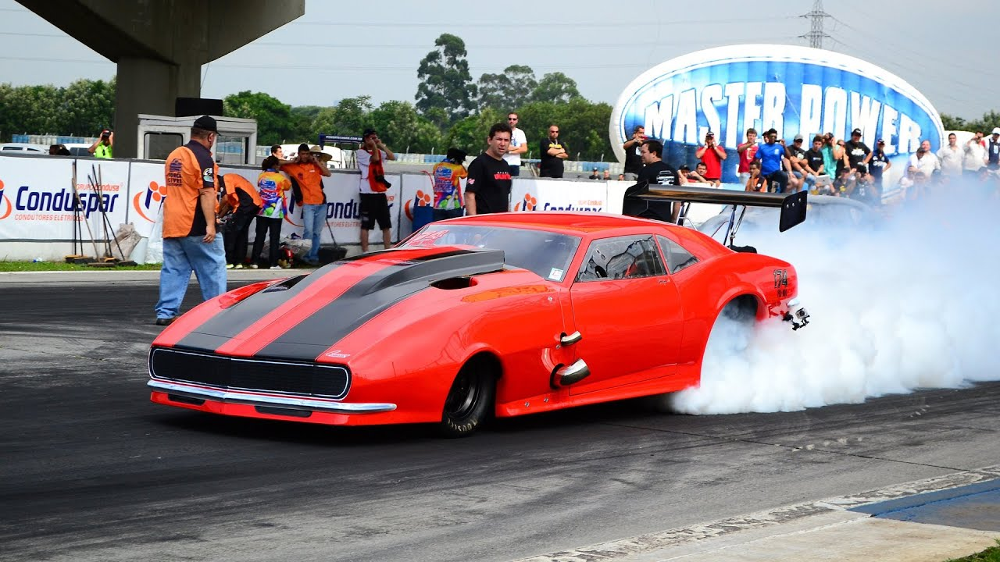

Fazem parte dos recordes abaixo,apenas os obtidos nas 4 pistas que sediam o CBA:
Velopark (RS)
Toledo (PR)
Racevalley (SP)
Race (MG)

Colocarei também um breve resumo de cada categoria.
Categoria ProMod
Participam desta categoria veículos bipostos nacionais e importados, turismo, de produção em
série, réplicas e protótipos, coupê, sedan ou pick-up de 2, 3, 4 ou 5 portas. O piloto deve estar
sentado no lado direito ou esquerdo do veículo.
HOMOLOGAÇÃO:
Veículos de turismo, réplicas e protótipos.
Permitido o uso de veículos de 01 (um) ou mais lugares.
A denominação desta categoria será Pro Mod.
A entrada e saída do piloto deve ser feita obrigatoriamente pela porta lateral, não sendo
permitido que a carroceria se desloque para a saída
MOTOR:
Permitida a substituição do motor original por de outro fabricante, podendo ser nacional ou
importado.
As capacidades volumétricas devem seguir o exposto no item 12.3 deste regulamento:Regulamento ProMod
Permitido o recuo do motor.
A ordem de montagem de fábrica do conjunto motor / caixa de cambio / diferencial pode ser
alterada.
Participam destas categorias veículos bipostos nacionais e importados, turismo de produção em
série, réplicas e protótipos, coupê, sedan ou pick-up de 2, 3, 4 ou 5 portas de tração dianteira,
traseira ou integral.
Veículos de turismo, réplicas e protótipos.
HOMOLOGAÇÃO:
Permitido o uso de veículos de 02 (dois) ou mais lugares, sendo proibido o monoposto.
O piloto deve estar sentado no lado esquerdo ou direito do veículo.
A denominação desta categoria será EXTREME 10,5.
A entrada e saída do piloto devem ser feita obrigatoriamente pela porta lateral, não sendo permi
tido que a carroceria se desloque para a saída.
MOTOR:
Permitida a substituição do motor original por de outro fabricante, podendo ser nacional ou
importado.
As capacidades volumétricas devem seguir o exposto no item 3 deste regulamento:Regulamento XTM.
Permitido o recuo do motor. A ordem de montagem de fábrica do conjunto motor/caixa de
cambio/diferencial pode ser alterada.
Participam desta categoria veículos de turismo, bem como réplicas de veículos importados,
coupê, sedan ou pick-up, de 2, 3, 4 ou 5 portas de tração traseira equipados com motores de 4
(quatro), 6 (seis) ou 8 (oito) cilindros naturalmente aspirados.
HOMOLOGAÇÃO:
Veículos nacionais ou importados, bem como réplicas nacionais de veículos importados,
equipados originalmente com motores de 4 (quatro), 6 (seis) ou 8 (oito) cilindros.
Permitido o uso de veículos de 02 (dois) ou mais lugares.
A denominação desta categoria será Traseira Super.
MOTOR: Fica livre a substituição do bloco original, por outro de reposição, com o mesmo número de
cilindros.Os blocos de motores V8, deverão ser “smallblock”, de ferro, limitados a no máximo 420
polegadas cúbicas com “Deck Height” máximo permitido conforme descrito neste regulamento:Regulamento TS